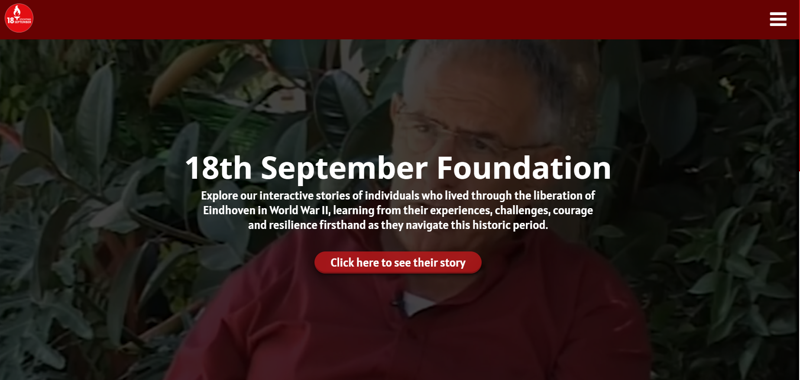
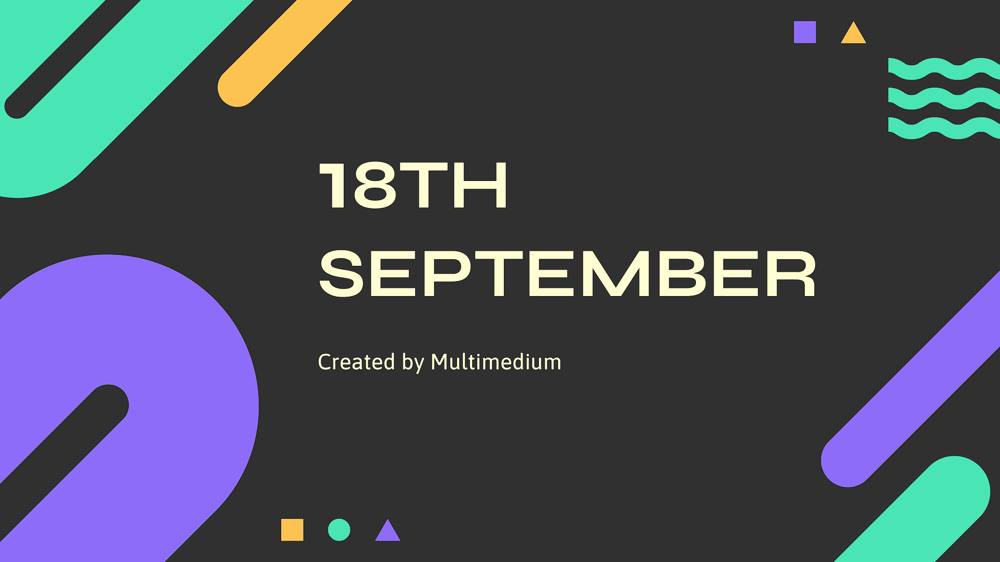

Our first task as a group was to create a contract for our studio. The final version you can see by pressing the button below. For the creation of it we decided on commitments and consequences for not obiding by them and those being punctionality to stay connected on whatsapp if something pops out such as problems with ns people being late etc. When it comes to to the consequences we discussed some option when me and will propposed a strike system based on if people are missing, being late, missing deadlines and etc but to make it more lineant we decided to vote as a team on whether a strike should be applied or not which I think was a great idea for keeping things from getting out of hand.
After deciding on our values and color scheme as a group we started work on logos during which we faced some problems that were pointed to us but our teachers such as our first logo having text which made it unreadable when it was smaller and us not really going out in more directions. The logo in question you can see on the left. After the feedback we decided to start drawing some logos (i am sorry but i dont have a photo of the sketches) and then we transfered them into figma and started creating them after we did we chose two of them as the best ones and after a second vote we chose out final logo which you can see in the second picture on the left. and by pressing the button below you will be able to see all of our logos.
We finalized the logo displayed on the left, which emerged from the sketches we developed after Chris recommended taking a step back and focusing on prototypes before diving into designing it in tools like Figma or other design applications. To determine the color scheme, we incorporated a gradient between our brand colors. To preview how it would appear against various background colors, we inserted it into our JavaScript code for the counting task and allowed it to generate random background colors. Once completed, we incorporated it into our brand book. Unfortunately, I am unable to provide a direct link to the brand book at the moment due to issues with my InDesign version. I am currently awaiting the PDF from Minh. When I receive it, I will promptly provide the link via the button below.
As a team, our first move was to decide what we wanted to make and where we wanted to take it. After throwing around ideas, we settled on making an interactive documentary where you get to pick the direction of the story. Our documentary will explore various stories from the war, allowing viewers to choose their own path and see different outcomes based on their choices. After finalizing the idea we started off with making some sketches and eventually creating the wireframes of how we wanted our website to look.
Before we started work on the creation of the surveys, interviews and personas we started off by emailing our client in order to get a cleared direction of what was wanted from us, who our target group is and to ask for access to some extra materials in order to find out what our limitations are going to be. The emails you can see below
Once we settled on our project idea, we began by designing a survey. This helped us learn more about how our target audience typically engages with this kind of media. Our findings showed that the majority of our audience fell between the ages of 18 and 30, and they prefer learning through visual mediums like films, videos, and documentaries.
We also made a mood board to help us and our clients envision our project. It included screenshots from videos and games that share a similar concept to ours, where the story is mainly driven by the user's choices(Bander snatch, Risk of rain, Detroit: Become human and etc).
During the creation of the interview we also worked on the competitor analysis document in which we compared the previously mentioned movies video games and shows in order to find out what they did well what could be improved and what the users didn’t like about them based on reviews and discussions online. All this was done in order to figure out what our products should strive to do and what it should avoid.
We also made a competitor analysis on the events that that other popular liberation organisations organise in order to see which event people like most and why. In order to achieve this we once again went over the all of the strength of the events what makes them interesting to people. The biggest factor from what we saw was the oportunity to meet new people and engage in various activities. We also went over weaknesses and how to improve the events and the most common one was lack of identity since the ones we took a look at were party oriented events which lacks a particular theme and identity as i mentioned previously.
The next major step was the creation of the Personas after gathering as much survey answers as we could in the given time frame we created a few personas in order to help us visualize the few major target groups such as people that have heard of the events from 18th september, people that haven’t but are interested in history and etc. We used these personas to help us visualize and compact the data so we could figure out exactly what the users want.
After collecting data from surveys, interviews, and extra secondary research, we put together this Empathy Map, as a way to help us really get what our target users are all about. This Empathy map is both related to the 18th September event, as well as their thoughts on Interactive storytelling as a whole.
Based on the Empathy map above, the significance of the 18th September event has waned over the years, particularly among both younger and older generations. Even though it is a traditional event, both found it not as special as it used to be. However, the rich history associated with this event still resonate across generations.
Interviews
Creation:
The next step was the creation of the interview transcript and holding the interviews.Thanks to which we were able to get a bit more insight into how familiar our users are with the concept of and what they think of it and whether they are familiar with the 18th September event. You can view the transcript for more information on our findings.
From the first interview we learned that Ruyet prefers learning through visual mediums like movies, videos, and interactive stories rather than traditional methods like books. He enjoys educational content more when he is not aware it's educational beforehand, possibly because it feels less forced. He tends to get bored initially but can later enjoy movies or activities he was initially resistant to. He likes quick, visually engaging summaries and prefer options that interests him without worrying much about the outcome. He appreciates concise explanations and the option for more in-depth information if he chooses. He prefers a combination of narration and subtitles and enjoys interactive elements like GIFs or videos with controls for deeper exploration.
Key takeaways Interview II:
She prefers learning through a variety of mediums like books, classes, and movies, particularly about topics like World War 2. She often seeks out additional information online. Her interest in learning varies depending on the topic, but she appreciates both text and visual resources. She's aware of events like "freedom cycling" and understands the significance of memorial lights on September 18th, likely through word of mouth from colleagues. Regarding interactive stories, she's familiar with the concept but lacks detailed knowledge. She enjoys the freedom to choose directions in stories and finds them more engaging than traditional quizzes or tests, although she can become frustrated with lengthy content. She prefers skipping ahead or having timestamps to navigate. She favors a timeline structure over chapters and prefers interactive elements like skipping shortcuts rather than holding to speed up. She values educational elements in interactive stories and sees potential benefits for her children. She picks story choices based on immersion and enjoys having freedom to explore different options. She suggests ideas like using AR to visualize the past. Overall, she seeks immersive and engaging educational experiences, especially in interactive storytelling formats.
Research Phase Deliverables
Research Document
After compiling all of our research we wrote a document about our methods, findings and why they are important to us. This document will in turn be sent to our client in order to display our progress thus far with the project. Everything that i have talked previously in this portfolio has been detailed indepth in this research document.
This is the second part to our process that helps keep our client up to date with our process. In it we have gone a bit more into detailes when it comes to what our concept is. For example this contains POVs which give insight into the target group we chose, their needs their background and their frustrations. Another huge part of this document are the How might we questions which go into details of how we can improve the user experience by answering to some questions that might arise during the use of our product, such as, How might we create immersive and interactive experiences; How might we leverage digital platforms and social media channels to create virtual experiences that allow individuals like Fleur and Jan to interact with historical artifacts, documents, and multimedia content related to World War II in Eindhoven and etc. The document also contains an empathy map which i still think was quite early to develop since we need atleast a working prototype in order to find out how exactly the users would interact with it. This map you can see on the left.
During the final week before this submission for the portfolio (submission 2) we had our first client meeting with Frank. During which we presented our concepts to him and recieved some feedback not just from frank but from our teachers Jan and Petra. In the next paragrath you could read about the feedback and my thoughts on it. There is also a video of our Presentation to the client which you can see on the left. Quick heads-up its quite long, but you can view everything from the questions we asked/got asked and the feedback we got.
Recieved Feedback:
One of the main questions we faced was how we would tackle our project. Because our idea was pretty complex, there was worry that we might not be able to pull it off. However, Jan came up with a brilliant suggestion of using voice narration over images or videos to tell our story. Petra also recommended focusing on just one storyline. Honestly, I had doubts about whether we could create a whole website and a "choose your own adventure" video in the short time we had—about 8 weeks. But with the advice we received, I believe if we switch from filming to voice recording and take up Frank's offer to approach film producers for using parts of their films, it's definitely achievable.
Development Phase
Introduction
Before starting this phase we devided our group into two teams: The first team being the Development team which consists of me Wit and Zhan, and we were responsible for the creation of the prototypes of our website, their testing and their creation. The second team made out of QA, Will and Minh were responsible for going over the stories, story boarding and the overall creation of the 2 videos needed for our website.
Thoughts:
Although we havent finished the video i am very pleased of how everything worked out. To be fair i expected it to go alot worse with Will's problems with the trains, Zhan being gone for a week and me having to go back to Bulgaria for a check up because of problems with my knee, We managed to have the website done with a whole week to spare and we also have the video completed for the most part.
Challenges:
During this phase i honestly thought that our biggest challenges would be time management and/or git merge problems, but the biggest problem we faced was communication with our client which led to a variety of problems such as copyright issue due to us resorting to images from the internet for our video and us having to scrap a few ideas such as the quotes section of our website due to our inability to reach frank.
conclusion:
In conclusion as i previusly mentioned i am very happy with how this project turned out and now the only thing we are waiting for is the final presentation.
Paper Protoype
Introduction and first ideas
Before getting to coding me and QA got to work with the creation of the paper prototype of our websites. 1 for our group project and 1 for our brand which we would continue with our passion project. To begin we wanted to create a simple website that would host the video. For start we decided of having 2 sections 1 for video and 1 for the company that would in turn lead to their website. A few questions arose with the way we would display the video while QA suggested we have the first section just for the video i suggested we create a banner with a brief moto for the video and when pressed it would in turn switch to the video.
Tests and Feedback
After we finished the paper prototype i tested it with a friend of mine in order to get a perspective from a member of our chosen target audience of students and young adults between the ages of 16 to 30, even though i usualy hate testing papper prototypes due to them being quite limited to the amount of interactivity they could have. But after giving it to my friend he suggested a few improvements such as changing the footer so that it doesnt look as empty. center the items in the header and to add some motion when we reach the site implementation phase to make it look less bland.
Figma Protoype
Introduction and first ideas
With the figma prototype we wanted to stick as close to the paper prototype as possible while also implementing the improvements that my friend suggested. With this the improvements we made were we centered everything on the header added the color scheme from the 18th september and added a background to the main section and decided to add 3 answers from people that work at 18th september about what the company means to them in order to fill in some of the empty space on our website and to give it a bit of a personal touch to the website. We also created a prototype for our own brand website but we still havent done any research on it since we would be working on it for the passion project. Both prototypes you can see by pressing the button below.
Once again after we were done with the figma prototype I asked my friend to give us a perspective on what he thinks. This time he said that he likes the second section alot, but made some remarks such as the background on the first sction being too distracting and to put the logo on the left of the header.
Final Website

Introduction and first ideas
At last we completed the website. with the main improvemnts that we made being we added a tint over the first section and started with a static image which after some feedback we swapped out for a trailer video in order to make the website feel alive and to ensure we grab the users attention. The second improvement which i made was adding the background image with a blue tint at the second section.
Tests and Feedback
As i previously mentioned we recieved feedback on our design from both Kadian and Jan. What kadian suggested is to work abit on the header to make it abit better and me and qa had 2 ideas one was to remove the hamburger menu and change it for buttons in order to fill in the empty space in the header. I had the idea to use Texture similarly to what i did in my portfolio. QA and I tried improving it but it will take me some time to make the textures in order to use in the header.The second part of the feedback from kadian was to change the background of the first section which was something that we were planning on doing even before the feedback, the main reason being that we knew it was way too static but our first idea was to just add animation to the image of zooming in and out, but during the feedback the idea of using a teaser video as a background arose. We also got some good feedback and that being that Kadian really liked the second section and what I have done with it. From jan we got the feedback to work on the second section and turn it into more of a movie poster instead of the original idea of having the quotes from the company representatives.
Although me and the rest of the design team did not participate directly with the creation of the video, we were there sharing ideas and suggestions on how to make it better. Some of the suggestions i remember giving were using stcok photos with a voice over in order to speed up the creation of the video. After alot of hours of hard work will and minh created a video which i can safely say we are very proud of and the only thing left is for us is to inplement it into the Website with the use of the JS code Wit created.
Of course there were a various range of problems with the video. Such us the lack of material, due to us not getting any responces from frank and so we were forced to resulting to images from the internet which does come with its own set of problems such as copyright. The other problem we had was with the video that was on the 18th september website since our FMV game takes most of its shots from that video having a background music which we couldnt remove possed problems with people being able to figure out what is said, but for this we implemented subtitles and i hope it helps.
Final Presentation
Introduction

With the final deadline getting closer and closer, QA Zhan and i started the creation of the final presentation for or client. And although we had some dissagreements on what to include in it we decided on 6 key pieces. brief explanation of who everyone is, Brief overview of the most important pieces of the creation phases, A demo and improvements that could be made.
Expectations and worries
Even though we still haven't presented it i truly believe that the work we have done exceeded our expectations and it is something that would leave a really good and memorable impression. But i also am worried about my absence due to the deadline not being concrete and me being in bulgaria during the presenting, but to make sure i am there i would join and present online hoping for the best.
Advice Report
Introduction
With our work with our client coming to an end the last deliverable we had was the advice report. With us deviding the main sections we created a document that we think cover everything useful to our client Frank.
Feedback and Improvements
To begin with my part was the recomendations and current situation. For this i went into details about what our website is able to do what it is used for and what problems we had. The more important part though was the part about how the website could be improved and what to watch out for when the improvements are made. Although i didnt know what to write when it came to the financial improvements i think that i have done a nice job. The full abstact you could see below